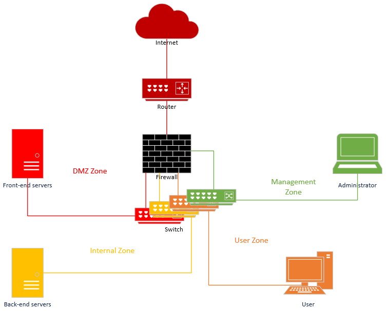
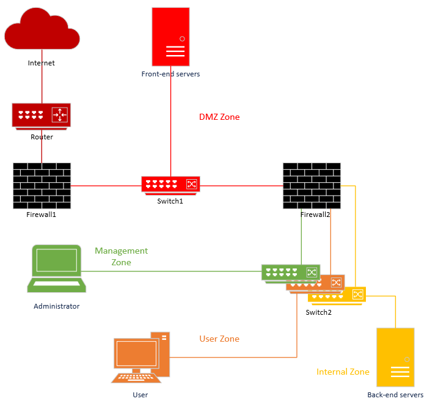

NIS2: Sind Sie im Anwendungsbereich?
Das neue belgische Cybersicherheitsgesetz ist in Kraft getreten.

Nowadays, it is unnecessary to point out that cybersecurity is an essential element for all companies, public institutions, and even private individuals.
Numerous components and tools can and must be put in place to secure your environment in the broadest sense. This includes not only network components such as servers and routers but also enduser computers, as well as employee and customer data, wherever it may be hosted.
This paper is intended as an introduction to all your future efforts to secure your environment, focusing first and foremost on the network itself. What technologies to use, what architecture to put in place, and how best to secure them are the questions we'll be answering.
To build a secure network, we must use different components, each with a specific goal in terms of security. For easier readability, we group these components into two categories: Content filtering, and traffic monitoring.
The first one, content filtering, groups elements that have active actions on the network and can manipulate traffic (authorize, deny, alter, etc). This includes:
The second category, traffic monitoring, groups elements that only monitor the network so don’t alter the traffic. This is mainly done by Intrusion Detection Systems (IDS)
All these elements should adhere to some best practices to achieve their goals and must be nested correctly.
There are mainly 3 kinds of firewalls: stateless, stateful and next-generation.
The stateless and stateful firewalls both inspect the packet headers before taking a decision, so they only look at IP and port, source, and destination. In addition, the stateful firewall stores information about active connections. When a connection is open, the firewall tracks and updates its internal state record as new packets are inspected. That gives it the possibility to detect anomalies. For example, a DNS response with no corresponding request.
So, we always recommend a stateful firewall instead of a stateless.
A Next-Generation Firewall (NGFW), however, can inspect the payload of most of packets. The processing capacities and therefore price are of course higher. But it is the current best firewall technology on the market.
As a rule of thumb, we want to reduce the attack surface of our systems as much as possible, and everything that remains accessible should be controlled tightly.
Our first focus will be the configuration and maintenance of the firewall itself. As such, we should insist on using nominative accounts, ideally authenticated via a directory service thanks to the LDAP protocol, with Multi-Factor Authentication and a valid certificate for proper security.
Read our paper about Multi-Factor Authentication: https://www.cert.be/en/paper/better-protect-accounts-multi-factor-authentication.
The service account used for querying the active directory should have the least privileges possible.
All nominative accounts should respect the principle of the least privileges. For example, an analyst would only have read access whereas an administrator could have read and write. Ideally, this would be set up with role groups in the directory service to avoid having disparate rights configuration. The local administrator credentials should be secured in a vault and never used unless no other choice is possible.
The list of accounts that have access to the firewall must be updated depending on hiring and departures, as well as when employees' functions change. This list must be reviewed at least on a yearly basis.
In terms of network configuration, we should absolutely dedicate a physical interface of the firewall for administration access in the administration VLAN. We should take care of deactivating network interfaces that are not used, always in the spirit of diminishing the attack surface.
It is important as well that the firewall possesses statics routes for every internal networks not directly connected to the firewall, to avoid the use of DNS and possible spoofing attacks.
When configuring your filtering policy, we recommend using explicit rules. This means writing down everything you want to do, in a logical order, without assuming the application of implicit rules perhaps built into the firewall. In addition, it makes it easier to understand and maintain for you and future administrators. It is also easier to refine specific parameters for a rule, for example, choose to not log a well-known noisy traffic.
Apply also the principle of least privileges: open only the ports necessary for the smooth running of the business and the workers, and no more. Do not refuse to open every port either, but rather follow the principle of the "good father of the family".
Everything that is not explicitly authorized by the filtering policy should be also explicitly blocked. That’s why your configuration should absolutely end with a final blocking and logging rule.
To take a closer look at the logical order of the rules, which makes them more efficient, easier to read and maintain, we'll divide them into three types:
For example, here is a succinct view of what it would look like:
Source | Destination | Destination service | Action |
Allowed flows to the firewall | |||
[ADMIN_NET] | admin_interface | HTTPS | Allow + log |
[DISTANT_OFFICE] | external_interface | IPSEC | Allow + log |
Allowed flows from the firewall | |||
internal_interface | [UPDATE_SERVERS] | HTTPS | Allow + log |
external_interface | [DISTANT_OFFICE] | IPSEC | Allow + log |
Firewall protection | |||
any | [ALL_INTERFACES] | any | Block + log |
Allowed business traffic | |||
proxy | internet | HTTPS | Allow + log |
[USERS_NET] | [ADDS_SERVERS] | AD | Allow + log |
[MAIL_SERVERS] | internet | SMTP | Allow + log |
Noise rules | |||
[USERS_NET] | users_net_broadcast | SMB_BROADCASTS | Block |
Final block | |||
any | any | any | Block + log |
We want to keep control of outgoing internet connections to detect Command & Control (C2) traffic or covert channels and block access to malware or malicious websites. A proxy serves this purpose.
The proxy should have enough capabilities to decrypt and analyse traffic. For this purpose, the proxy server acts as a gateway between the user and the destination server, handling all requests and responses on behalf of the user. This position gives the proxy the capability to read the content of every connection and apply the desired filtering.
It must also ensure a secure connection between itself and the other actors involved. It ideally uses TLS 1.3 while taking care to never authorize to downgrade the encryption methods. That means we want to use explicit proxies instead of “bump-in-the-wire” (or transparent) proxies, which no longer work effectively with encrypted traffic.
Moreover, the proxy should have all modern protocol analysis capabilities: HTTPv3, QUIC, DoT, DoH, DoQ, media streaming, etc.
We want to be able to capture network telemetry to identify anomalies (very valuable for exfiltration detection) as well as network captures (PCAP) for future threat hunting. The logging of HTTP header is also interesting to identify data leakage. This is not the scope of this paper, but if you want more information or implementation methods, you can refer to the following article: https://cqr.company/web-vulnerabilities/information-leakage-via-http-headers/.
This determines how user devices are validated when accessing the Internet. Proxy Authentication must be enabled to be able to create new policies for users or groups.
Two methods can be used to authenticate a user, via their device’s IP address or via username and password. The second option is obviously the best, but it will not be possible for each component of your network, for example, servers. We will then create a list of authorized source hosts and destinations based on technical needs (update servers). Indeed, server access to the internet is the easiest to abuse for data exfiltration for attackers. Any access that is not authenticated or allow-listed should be blocked.
Thanks to user authentication, the proxy should be able to detect local or domain administrators, any privileged accounts, or service accounts and block their access to the internet.
With an explicit proxy we will typically use a Proxy Auto-Configuration (PAC) file or Web Proxy Auto-Discovery (WPAD) that describes to the client host how it should access resources depending on its URL, hostname, or IP. That file should be stored in a manner that is easily and quickly accessible to the users but not from the outside, and only the appropriate privileged users should be able to modify it.
It is possible thanks to that file to configure certain connections bypassing the proxy (DIRECT) but the risks this entails need to be carefully considered.
In terms of policy, the proxy should be configured to:
If we want to reduce the risks of a rogue device being physically connected to the network, a Network Access Control (NAC) solution is a good mitigation. The NAC solution will permit to verify the authorization and access levels for every device or user before connecting to the network. The connecting device or user is at first put in a separate VLAN, and if authentication and authorization are validated, is then connected to the network.
The implementation of such solutions is outside of the scope of this paper, but here are some basic recommendations:
A NAC can not only authenticate the user but also validate the security configuration of the client host to see if it satisfies the security policies. For example, having an up-to-date antivirus, etc.
VPNs are used to interconnect separated hosts or networks over the internet in a secure and confidential way.
There are multiple types of VPN, we will focus here on the two most important which are the IPsec and the SSL VPN solutions. The main difference is the protocol level: IPSec is embedded in TCP/IP while SSL/TLS is a layer on top of TCP/IP.
Whatever VPN technology is chosen, it is important to follow the usual security considerations depending on what is available: proper authentication, proper access control, and proper logging. These considerations are out of the scope of this paper and will be covered in other publications.
IPsec VPNs are composed of three main protocols: Internet Key Exchange (IKE), Authentication Header (AH), and Encapsulating Security Payload (ESP).
If you are using a VPN concentrator, we recommend enabling Dead Peer Detection (DPD). That is a mechanism that allows the two peers of an IPsec tunnel to detect if the other peer is not reachable anymore and delete the IKE security association.
To go further, we can have an up-to-date state-of-the-art reference for everything related to the encryption mechanisms in the NIST Special Publication 800-77.
SSL VPNs work very much in the same way that do other SSL/TLS technologies, such as HTTPS. Concretely, that means the tunnel is established through four steps (the famous four-way handshake), which are the initial handshake, the server authentication, the encryption negotiation then the key exchange. Data is then forwarded in the tunnel that is created for the endpoints or networks for which it has been configured, with the encryption mechanisms and keys that have been negotiated.
Considering this is very standard, it makes the implementation and maintenance of such tunnels quite easy.
However, don't forget to choose a reasonably sized certificate (RSA 2048-bits for a Let's Encrypt certificate is more than sufficient). This wonderful tool from the Mozilla Foundation should help you a lot: https://ssl-config.mozilla.org/
It avoids making mistakes when you need an SSL configuration for a service you don't know much about.
Here is the usual minimal recommendation for the usage of encryption algorithms in SSL VPN as of the time of publication:
Setting | Recommendation |
Cipher | AES-GCM, AES-CTR, AES-CBC, AES-CCM (128, 192, 256-bit keys) |
Handshake | RSA, DSA, ECDSA with 128-bit security strength : minimum RSA or DSA with 3072-bit key or ECDSA with 256-bit key |
Hash authentication | HMAC-SHA256, HMAC-SHA384, HMAC-SHA512 |
Perfect Forward Secrecy (PFS) | DH14 to DH21 |
Source: ANSSI - Agence Nationale de la Sécurité des Systèmes d’Information. (2020, January 1). Guide des mécanismes cryptographiques. ANSSI. https://www.ssi.gouv.fr/uploads/2021/03/anssi-guide-mecanismes_crypto-2.04.pdf
IDS (Intrusion Detection Solution) and IPS (Intrusion Protection Solution) are solutions that can detect and eventually block threats in the network. You will find more detail in one of our future paper.
WAFs (Web Application Firewalls) is a device placed in front of a web server that will protect the web services against attacks on an applicative level. This technology will be discussed in another paper.
To segment the network, we use the concept of VLAN (Virtual Local Area Network). This technology allows us to create within a router or a Layer-3 switch different separate virtual networks, without having the cost and complexity overhead of having physically separate networks.
The principal risk of using VLANs instead of physical segmentation is VLAN-hopping attacks, in which an attacker could abuse some mechanism to “jump” from a less sensitive VLAN to a more sensitive VLAN, bypassing the security measures that should protect the sensitive VLAN. This type of attack can be mitigated with a minimum of preparation thus this disadvantage is far behind the benefits of VLANs.
We can reduce the risks by following a few recommendations, which we will describe in a following chapter “Network devices configuration”.
We will also describe how VLANs can be exploited to create a whole network in the chapter “Traditional network security”.
While network devices are not security devices, and should not be considered as such, they are very central and can easily be exploited by attackers and thus need special attention as to how they are configured from a security point of view.
Therefore, there is a set of configuration hardening that should be implemented for routers and switches:
To build a complete and secure network using the components describe above, we will use the concept of security segmentation. This concept requires that a minimum risk analysis is done on the infrastructure we want to set up.
The basis of that risk analysis goes as follows:
From that, we can create the following security zones:
We then want to separate virtually or physically all these zones. This is an example of such an architecture:

In that case we use a single firewall for all VLANs, and a single switch with a VLAN for every zone. In a more expensive and slightly more complex scenario, this is what we could have:

Here we use two firewalls, that could be from two different vendors to mitigate the risk of a 0-day affecting one vendor. But the risk is that knowledge/skills will be diluted, and instead of having a single well-configured device, the company will have a well-configured device and a less well-configured device. The latter could then become a much easier target, and have the opposite effect to that intended. So choose carefully.
We also use a physically separate DMZ to mitigate the risks of a 0-day on the switch as well as the risk of VLAN-hopping.
These examples show that the number of security zones and devices can vary a lot. This is why it is important to do a risk analysis to build an infrastructure that is coherent.
Zero Trust is a concept used to create a very secure infrastructure in which we go further than the traditional architecture seen previously.
As the name suggests, in this architecture there is no implicit trust based simply on the network location. As such any user or system that tries to access resources will have to authenticate themselves in a strong way, with MultiFactor Authentication (MFA) for example, and access will be granted or not depending on a least privilege access policy.
It goes also further in terms of micro-segmentation, as systems will be more strictly separated from each other, with protective and monitoring controls at every step of the way.
ZTN is out of the scope of this paper, but the NIST Special Publication 800-207 gives a more in-depth definition of what a Zero Trust Network is, and the NIST SP 1800-35 explains in detail how to implement a Zero Trust Architecture.
In this paper we covered a wide scope of basic security technologies and strategies. Even if it’s a good start, we recommend to always keep your knowledge and skills up-to-date. Our next papers will focus on more specific aspects with the intention to help you build your cyber defence.
ANSSI - Agence Nationale de la Sécurité des Systèmes d’Information. (2013, March 30). Premier Ministre - Agence nationale de la Sécurité des Systèmes D... Recommandations pour la définition d’une politique de filtrage réseau d’un pare-feu. https://www.ssi.gouv.fr/uploads/IMG/pdf/NP_Politique_pare_feu_NoteTech.pdf
ANSSI - Agence Nationale de la Sécurité des Systèmes d’Information. (2020, January 1). Guide des mécanismes cryptographiques. ANSSI. https://www.ssi.gouv.fr/uploads/2021/03/anssi-guide-mecanismes_crypto-2.04.pdf
ANSSI - Agence Nationale de la Sécurité des Systèmes d’Information. (2021, April 2). Recommandations pour une configuration sécurisée d’un pare... RECOMMANDATIONS POUR UNE CONFIGURATION SÉCURISÉE D’UN PARE-FEU STORMSHIELD NETWORK SECURITY. https://www.ssi.gouv.fr/uploads/2017/12/anssi-guide-recommandations_configuration_securisee_pare_feu_stormshield_network_security_version_3.7.17.pdf
Australian Government. (2022, July 29). Gateway security guidance package: Gateway technology guides. Gateway Security Guidance Package: Gateway Technology Guides | Cyber.gov.au. http://www.cyber.gov.au/resources-business-and-government/maintaining-devices-and-systems/system-hardening-and-administration/gateway-secuirty-guidance/gateway-technology-guides
Bhardwaj, R., Ipwithease, & Rashmi BhardwajMore From This AuthorI am here to share my knowledge and experience in the field of networking with the goal being - "The more you share. (2022, December 22). Proxy vs PAC file: Detailed comparison. IP With Ease. https://ipwithease.com/proxy-vs-pac-file/
Cisco. (2022, August 31). VLAN best practices and security tips for Cisco Business Routers. Cisco. https://www.cisco.com/c/en/us/support/docs/smb/routers/cisco-rv-series-small-business-routers/1778-tz-VLAN-Best-Practices-and-Security-Tips-for-Cisco-Business-Routers.html
Crawford, W. by Douglas, Crawford, D., Carroll, L., Lorraine, (R)., Eng. T. H. 4000, Douglas Crawford replied to Eng. Tarek Herik 4000 (R)., Johnny, johnny, D. C. replied to, Foster, K., & Douglas Crawford replied to kristy foster. (2020, June 30). VPN encryption types: Openvpn, IKEV2, PPTP, L2TP/IpSec, SSTP. ProPrivacy.com. https://proprivacy.com/vpn/guides/vpn-encryption-the-complete-guide
Kozierok, C. M. (2005, September 20). IP Security (IPSec) Protocols. The TCP/IP guide - IP security (IPSec) protocols. http://www.tcpipguide.com/free/t_IPSecurityIPSecProtocols.html
Merchant, S. (2021, September 26). TLS 1.3 is moving forward: What you need to know today to get ready. Gigamon Blog. https://blog.gigamon.com/2018/05/10/tls-1-3-is-moving-forward-what-you-need-to-know-today-to-get-ready/
Michali, C. (2023, March 20). Stateful vs. stateless firewall. Check Point Software. http://www.checkpoint.com/cyber-hub/network-security/what-is-firewall/what-is-a-stateful-firewall/stateful_vs_stateless_firewall/#:~:text=Stateful%20and%20stateless%20firewalls%20largely,valid%20based%20on%20predefined%20rules
Network Access Control. Network Access Control - The Hacker Recipes. (n.d.). http://www.thehacker.recipes/physical/networking/network-access-control
NIST - National Institute of Standards and Technology. (n.d.). Guide to IPsec VPNS. National Institute of Standards and Technology. https://nvlpubs.nist.gov/nistpubs/SpecialPublications/NIST.SP.800-77r1.pdf
NSA - National Security Agency. (2022, June). Network Infrastructure Security Guide - U.S. Department of Defense. National Security Agency. https://media.defense.gov/2022/Jun/15/2003018261/-1/-1/0/CTR_NSA_NETWORK_INFRASTRUCTURE_SECURITY_GUIDE_20220615.PDF
Palic, J. (2022, November 23). Comparing IPsec vs. SSL VPNS. ONLC. http://www.onlc.com/blog/comparing-ipsec-vs-ssl-vpns/#:~:text=The%20main%20difference%20between%20IPsec,or%20application%20on%20the%20network
Speaker, M. C. (2023a, May 16). Full proxy. Technology Focused Hub. https://network-insight.net/2015/10/22/full-proxy/